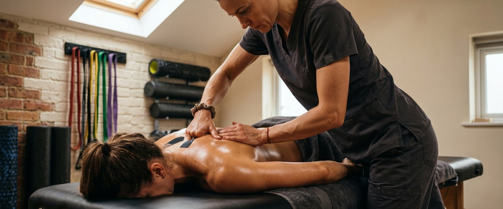
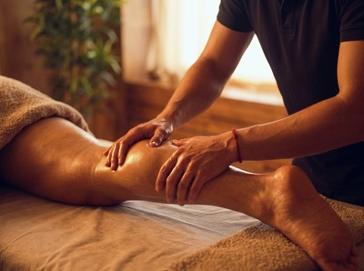
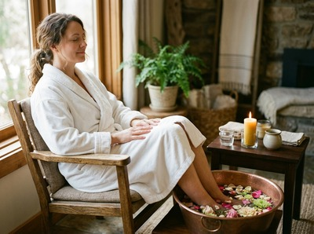

If training, physical work, or an active lifestyle has left your muscles tight, heavy, or slow to recover, Thai sports massage in Greenock is built for exactly that.

Thai Massage Greenock offers targeted sports massage treatments. They combine traditional Thai technique with focused muscle work to help you recover faster, move better, and stay injury-free.
Thai sports massage blends deep compression, assisted stretching, and acupressure along the body's sen energy lines. It is adapted to meet the demands placed on active muscles and joints. Unlike a general relaxation massage, it targets chronic tightness, restricted movement, and post-exercise fatigue with deliberate, results-focused pressure.

Jariya uses hands, forearms, thumbs, and sometimes feet to apply sustained pressure into muscle tissue. At the same time, she guides the body through assisted stretches that a table-based massage simply cannot replicate. The result is a treatment that reaches deep into overworked muscles while restoring the range of motion that repetitive training tends to take away.
Thai sports massage suits anyone who puts consistent physical demand on their body. Runners, cyclists, gym regulars, golfers, swimmers, and weekend football players all benefit. So do people in demanding jobs such as construction, healthcare, or manual trades. If you carry persistent tightness in a specific area, or your performance has plateaued despite consistent training, targeted sports massage is often the missing piece.
Sessions typically run from 60 to 90 minutes. You remain fully clothed in loose, comfortable clothing throughout. No oil is used. Jariya will start with a brief chat about your activity levels, any areas of concern, and what you want from the treatment. From there, the session moves through compression, stretching, and acupressure aimed at your specific problem areas.

Afterwards, most clients feel a clear looseness in previously tight areas and a general ease that can last several days. Some mild tenderness in deeply worked areas is normal and usually clears within 24 hours. You can book your session online and arrive ready to make real progress on whatever your body has been carrying.
Thai Massage Greenock is led by Jariya Malone, trained at Bangkok's Wat Po temple — the birthplace of traditional Thai massage. Every treatment is personal. Jariya keeps detailed notes on each client and builds on previous sessions, so your sports massage evolves with your training and your body's needs. This is not a chain or a script. Book a sports massage treatment and experience what a truly tailored approach feels like.
Wear loose, comfortable clothing such as joggers and a t-shirt. Thai sports massage is performed fully clothed, so there is no need to undress. Avoid jeans or anything restrictive. The session involves assisted stretching, so your clothing needs to move with you.
Sessions run for 60 or 90 minutes. For clients with a specific injury or area of tightness, 60 minutes is often enough. If you want a fuller treatment covering multiple muscle groups, 90 minutes gives Jariya the time to work through everything properly.
Most clients feel noticeably looser and lighter straight after their session. The tightness they came in with is often much reduced. Some mild tenderness in deeply worked areas is normal and usually clears within 24 hours. Drinking water after your session helps your body flush out waste released during the treatment.
For active people in regular training, once every two to four weeks is a good rhythm. It stops muscle tension from building up over time. If you are recovering from an injury or preparing for an event, more frequent sessions may help. Jariya can advise on the right schedule based on your training load and goals.
Thai sports massage can be adapted to work around most soft tissue injuries. Targeted compression and stretching often supports recovery. That said, if you have a recent acute injury, a fracture, or have been told by a doctor to avoid massage, please get medical clearance first. Let Jariya know about any injuries before your session so she can adjust the treatment.
Traditional Thai massage follows a full-body sequence along the sen energy lines. It is ideal for general wellbeing, stress relief, and overall flexibility. Thai sports massage is more focused. It targets specific muscle groups under load, addresses imbalances caused by training, and is built around performance and recovery. Both use assisted stretching and acupressure, but the intent and focus differ. You can explore traditional Thai massage if you are looking for the full-body approach.